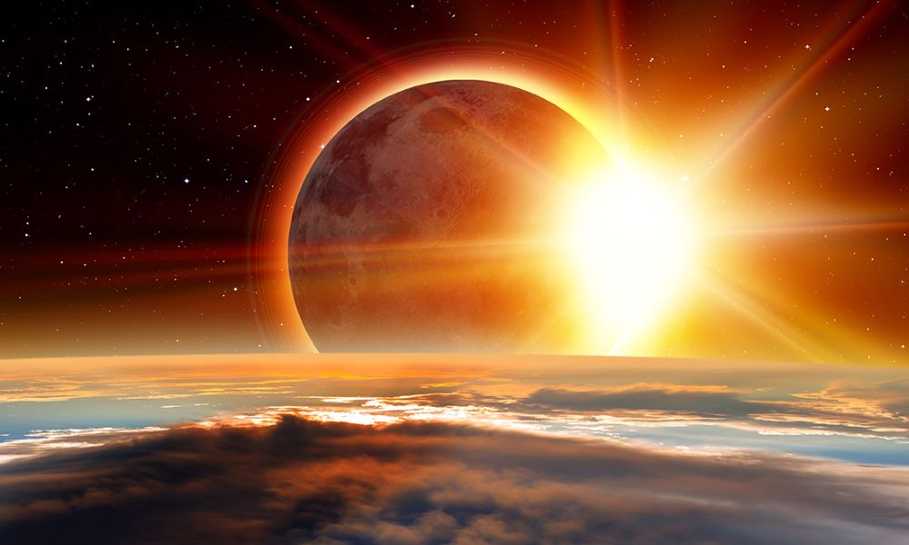
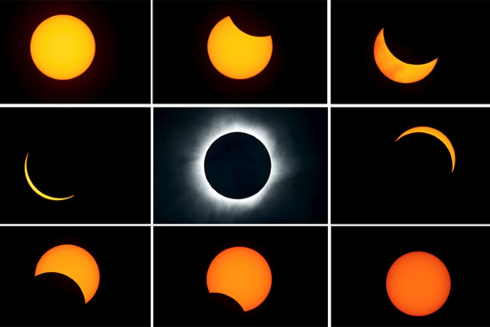
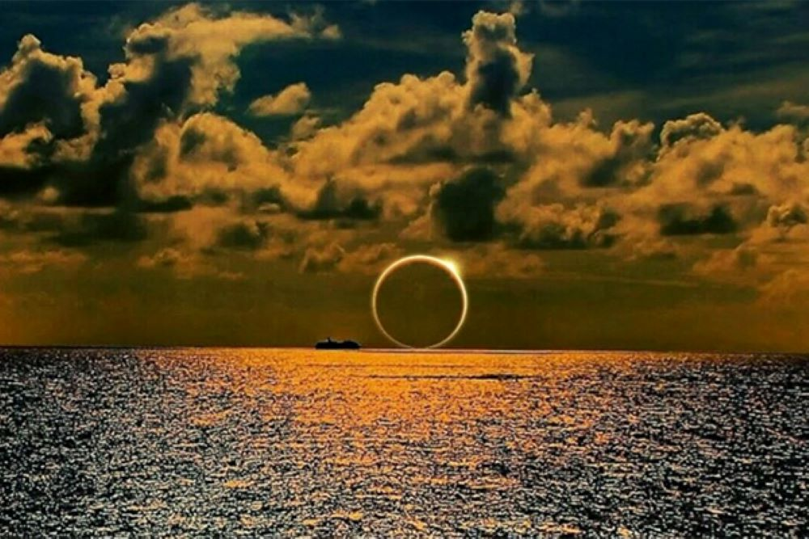

Những sự thật thú vị không phải ai cũng biết về hiện tượng nhật thực
Nhật thực – một hiện tượng khoa học vô cùng kỳ thú mà ai cũng mong chờ mỗi khi nghe tin tức sắp có hiện tượng này diễn ra. Nhật thực xảy ra khi Mặt Trời, Mặt Trăng, Trái Đất theo thứ tự cùng nằm trên một mặt phẳng. Trong lịch sử cổ đại, người ta quan niệm rằng đây là một hiện tượng siêu nhiên và là điềm báo cho một sự việc gì đó sắp diễn ra.
Ngày nay, khoa học ngày càng phát triển, con người cũng ngày càng thông minh hơn và đã có những nhận thức đúng đắn hơn về nhật thực nói riêng cũng như các hiện tượng tự nhiên nói chung. Tuy nhiên, có những điều thú vị mà có lẽ trước giờ chúng ta vẫn nhận thức sai về nhật thực. Bài viết dưới đây sẽ giới thiệu cho các độc giả những sự thật thú vị này.
Không phải lần “trăng mới” nào cũng xảy ra nhật thực
Điều kiện cần để xảy ra Nhật thực là Mặt Trăng nằm giữa Trái Đất và Mặt Trời (trăng non). Điều kiện đủ là 3 thiên thể này nằm thẳng hàng với nhau.
Trên thực tế, quỹ đạo Mặt Trăng bị nghiêng một góc 5 độ so với mặt phẳng hoàng đạo. Vì vậy không phải lần trăng non nào cả 3 thiên thể cũng thẳng hàng. Trong đó, mặt phẳng hoàng đạo là đường đi biểu kiến của Mặt Trời trên thiên cầu và là cơ sở của hệ tọa độ hoàng đạo.
Chính vì vậy, điều kiện đủ là Mặt Trời, Mặt Trăng và Trái Đất nằm thẳng hàng với nhau. Ngoài ra còn cần tới 2 điều kiện khác nữa.
Đầu tiên là điều kiện đối với các giao điểm tạo bởi hai mặt phẳng gồm mặt phẳng quỹ đạo Mặt Trăng và mặt phẳng hoàng đạo. Tại các giao điểm này, Mặt Trăng không được ở vị trí quá cao và cũng không quá thấp, phải “vừa đủ” để thẳng hàng và che khuất Mặt Trời.
Điều kiện thứ hai là Mặt Trời phải ở gần giao điểm Mặt Trăng (khi quan sát biểu kiến). Đơn giản hơn, đó là khi Mặt Trăng và mặt Trời có cùng một giá trị hoàng kinh (kinh tuyến hoàng đạo) hoặc xích kinh khi quan sát từ Trái Đất.
Nhật thực toàn phần không hiếm gặp
Dù thường xuyên có những thông tin nói rằng nhật thực toàn phần rất hiếm khi xảy ra, tuy vậy hiện tượng này không phải quá hiếm gặp.
Trung bình, sau mỗi khoảng 18 tháng, nhật thực toàn phần có thể nhìn thấy đâu đó trên Trái Đất. Có nghĩa là, một người có thể thấy được hiện tượng đặc biệt này tới 2 lần trong vòng 3 năm.
Nếu thiếu may mắn hơn, nơi bạn ở sẽ chẳng khi nào có cơ hội ngắm nhật thực toàn phần. Thực tế là có một số điểm trên bề mặt Trái đất có thể không thấy hiện tượng này trong suốt 36 thế kỷ. Thế nhưng điều này chỉ là lý thuyết bởi mỗi lần nhật thực toàn phần xảy ra, nó chỉ được quan sát bởi một vùng rất nhỏ trên Trái Đất. Vậy nên, nếu bạn chỉ sống tại một thành phố, phải mất rất nhiều năm để bạn có thể chứng kiến một lần nhật thực, đặc biệt là nhật thực toàn phần.
Số lần nhật thực trung bình trong năm luôn nhiều hơn nguyệt thực
Mặt phẳng quỹ đạo Mặt Trăng, Trái Đất mỗi năm cắt nhau tại điểm nút lên, xuống của quỹ đạo. Vì vậy, một năm có thể quan sát ít nhất 2 lần và nhiều nhất là 5 lần.
Tuy vậy, trên thực tế số lần nguyệt thực thường được quan sát và ghi nhận nhiều hơn nhật thực. Lý do là bởi thời gian diễn ra Nhật thực thường rất ngắn. Điều này là do bóng Mặt Trăng chiếu lên Trái Đất rất nhỏ và di chuyển nhanh. Trong khi đó, thời gian diễn ra Nguyệt thực khá dài do bóng Trái Đất rộng.
So với các hiện tượng thiên văn khác, việc quan sát nhật thực không cần dùng đến kính thiên văn. Người quan sát chỉ cần một tầm nhìn đủ lớn và bầu trời quang mây để nhìn thấy Mặt Trời.
Trong quá trình nhật thực, bức xạ từ ánh sáng Mặt Trời có thể tác động xấu tới mắt. Nguyên nhân này là do thời gian quan sát lâu hơn bình thường. Do vậy, người xem không nên quan sát Mặt Trời bằng mắt thường trong thời điểm này.
Người dân cũng không nên sử dụng kính thiên văn, ống nhòm,… để quan sát trực tiếp Mặt trời. Bởi vì chúng có thể làm tăng đáng kể cường độ bức xạ tiếp xúc với mắt.